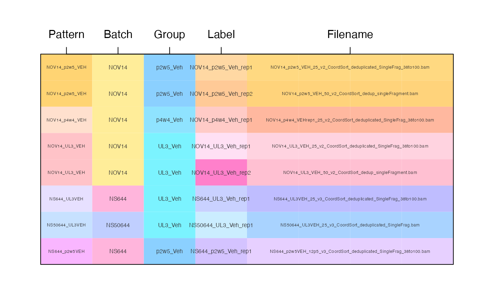

R/jam-curate-to-df.R
curate_to_df_by_pattern.RdCurate vector to data.frame by pattern matching
character vector of input data, often filenames used
when importing data using one of the import_* functions.
data.frame whose first column contains character patterns,
and subsequent columns contain annotations to be applied to entries
in x that match a given pattern. The column that contains patterns
can be specified with argument pattern_colname.
character string
indicating colname to use for patterns, group, and identifier,
respectively. The group_colname and id_colname may be NULL
in which case they are not used. When group_colname and
id_colname are defined, then values in group_colname
are used to make unique identifiers for each entry in x,
and are stored in id_colname.
character string indicating the colname to
use for the input data supplied by x. For example when
input_colname="filename" then values in x are stored in
a column "filename".
arguments passed to jamba::makeNames(),
used when group_colname and id_colname are defined,
jamba::makeNames(df[[group_colname]], suffix, renameOnes)
is used to make unique names for each row.
function called on colnames, for example
jamba::ucfirst() applies upper-case to the first character
in each colname. When colname_hook=NULL then no changes
are made.
character string passed to jamba::pasteByRow() when
concatenating columns to create a unique identifier for each row.
character string indicating how the output
data.frame row order should be defined. Note that the output
will only include entries in x that were found in the
curation df.
"df": output follows the order of matching rows in df
"x": output follows the order of matching x values
additional arguments are passed to jamba::makeNames().
data.frame with number of rows equal to the length of input,
length(x). Columns are defined by the input colnames(df).
Note that the row order of the output will match the
curation df input.
The purpose of sorting by curation df is so this data can define
the order of factors used in downstream statistical contrasts.
The factor order is used to define the control group, as
the first factor is preferentially the control group.
This function takes a character vector, and converts it into
a data.frame using pattern matching defined in the corresponding
df argument data.frame. The first column of df contains
character string patterns. Whenever a pattern matches
the input vector x, the annotations for the corresponding row in
df are applied to that entry in x.
Other jam utility functions:
cardinality(),
color_complement(),
convert_PD_df_to_SE(),
convert_imputed_assays_to_na(),
curate_se_colData(),
design2layout(),
get_numeric_transform(),
handle_df_args(),
merge_proteomics_se(),
rowNormScale()
df <- data.frame(
pattern=c("NOV14_p2w5_VEH",
"NOV14_p4w4_VEH",
"NOV14_UL3_VEH",
"NS644_UL3VEH",
"NS50644_UL3VEH",
"NS644_p2w5VEH"),
batch=c("NOV14",
"NOV14",
"NOV14",
"NS644",
"NS50644",
"NS644"),
group=c("p2w5_Veh",
"p4w4_Veh",
"UL3_Veh",
"UL3_Veh",
"UL3_Veh",
"p2w5_Veh")
);
## review the input table format
print(df);
#> pattern batch group
#> 1 NOV14_p2w5_VEH NOV14 p2w5_Veh
#> 2 NOV14_p4w4_VEH NOV14 p4w4_Veh
#> 3 NOV14_UL3_VEH NOV14 UL3_Veh
#> 4 NS644_UL3VEH NS644 UL3_Veh
#> 5 NS50644_UL3VEH NS50644 UL3_Veh
#> 6 NS644_p2w5VEH NS644 p2w5_Veh
x <- c("NOV14_p2w5_VEH_25_v2_CoordSort_deduplicated_SingleFrag_38to100.bam",
"NOV14_p4w4_VEHrep1_25_v2_CoordSort_deduplicated_SingleFrag_38to100.bam",
"NOV14_UL3_VEH_25_v2_CoordSort_deduplicated_SingleFrag_38to100.bam",
"NS644_UL3VEH_25_v3_CoordSort_deduplicated_SingleFrag_38to100.bam",
"NOV14_p2w5_VEH_50_v2_CoordSort_dedup_singleFragment.bam",
"NOV14_UL3_VEH_50_v2_CoordSort_dedup_singleFragment.bam",
"NS50644_UL3VEH_25_v3_CoordSort_deduplicated_SingleFrag.bam",
"NS644_p2w5VEH_12p5_v3_CoordSort_deduplicated_SingleFrag_38to100.bam")
df_new <- curate_to_df_by_pattern(x, df);
## Review the curated output
print(df_new);
#> Pattern Batch Group Label
#> NOV14_p2w5_Veh_rep1 NOV14_p2w5_VEH NOV14 p2w5_Veh NOV14_p2w5_Veh_rep1
#> NOV14_p2w5_Veh_rep2 NOV14_p2w5_VEH NOV14 p2w5_Veh NOV14_p2w5_Veh_rep2
#> NOV14_p4w4_Veh_rep1 NOV14_p4w4_VEH NOV14 p4w4_Veh NOV14_p4w4_Veh_rep1
#> NOV14_UL3_Veh_rep1 NOV14_UL3_VEH NOV14 UL3_Veh NOV14_UL3_Veh_rep1
#> NOV14_UL3_Veh_rep2 NOV14_UL3_VEH NOV14 UL3_Veh NOV14_UL3_Veh_rep2
#> NS644_UL3_Veh_rep1 NS644_UL3VEH NS644 UL3_Veh NS644_UL3_Veh_rep1
#> NS50644_UL3_Veh_rep1 NS50644_UL3VEH NS50644 UL3_Veh NS50644_UL3_Veh_rep1
#> NS644_p2w5_Veh_rep1 NS644_p2w5VEH NS644 p2w5_Veh NS644_p2w5_Veh_rep1
#> Filename
#> NOV14_p2w5_Veh_rep1 NOV14_p2w5_VEH_25_v2_CoordSort_deduplicated_SingleFrag_38to100.bam
#> NOV14_p2w5_Veh_rep2 NOV14_p2w5_VEH_50_v2_CoordSort_dedup_singleFragment.bam
#> NOV14_p4w4_Veh_rep1 NOV14_p4w4_VEHrep1_25_v2_CoordSort_deduplicated_SingleFrag_38to100.bam
#> NOV14_UL3_Veh_rep1 NOV14_UL3_VEH_25_v2_CoordSort_deduplicated_SingleFrag_38to100.bam
#> NOV14_UL3_Veh_rep2 NOV14_UL3_VEH_50_v2_CoordSort_dedup_singleFragment.bam
#> NS644_UL3_Veh_rep1 NS644_UL3VEH_25_v3_CoordSort_deduplicated_SingleFrag_38to100.bam
#> NS50644_UL3_Veh_rep1 NS50644_UL3VEH_25_v3_CoordSort_deduplicated_SingleFrag.bam
#> NS644_p2w5_Veh_rep1 NS644_p2w5VEH_12p5_v3_CoordSort_deduplicated_SingleFrag_38to100.bam
# note that output is in order defined by df
match(x, df_new$Filename)
#> [1] 1 3 4 6 2 5 7 8
# output can be ordered by x
df_new_by_x <- curate_to_df_by_pattern(x, df, order_priority="x");
match(x, df_new_by_x$Filename)
#> [1] 1 2 3 4 5 6 7 8
## Print a colorized image
colorSub <- colorjam::group2colors(unique(unlist(df_new)));
colorSub <- jamba::makeColorDarker(colorSub, darkFactor=-1.6, sFactor=-1.6);
k <- c(1,2,3,4,5,5,5,5);
df_colors <- as.matrix(df_new[,k]);
df_colors[] <- colorSub[df_colors];
opar <- par("mar"=c(3,3,4,3));
jamba::imageByColors(df_colors,
adjustMargins=FALSE,
cellnote=df_new[,k],
flip="y",
cexCellnote=c(0.4,0.5)[c(1,2,2,2,1,1,1,1)],
xaxt="n",
yaxt="n",
groupBy="row");
axis(3,
at=c(1,2,3,4,6.5),
labels=colnames(df_new));

par(opar);